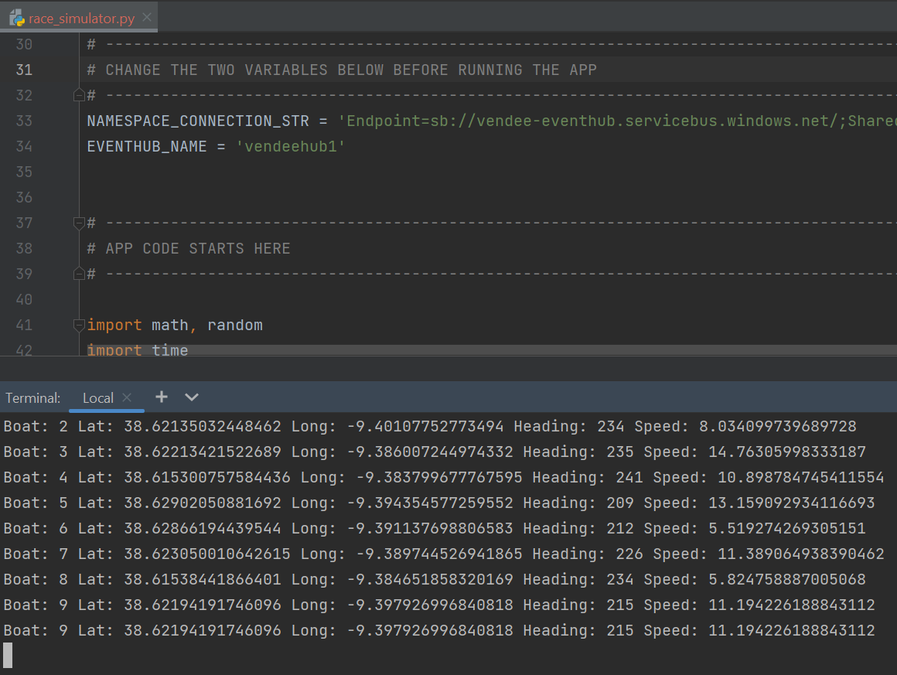
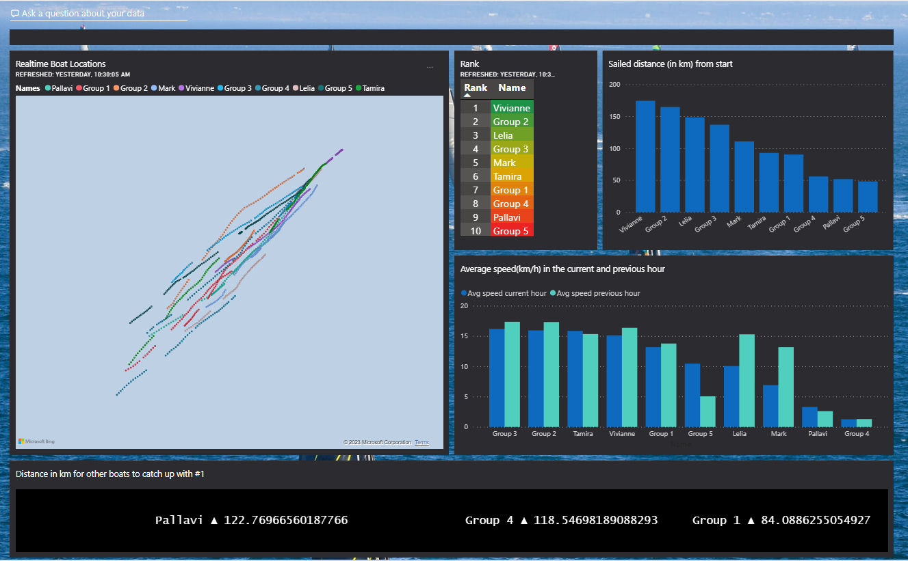

The Vendée Globe is an around-the-world yacht race that is sailed solo and non-stop. It was founded by Philippe Jeantot in 1989 and is considered to be an extremely challenging test of individual endurance and ocean racing. The race is held every four years, and the most recent edition, the 9th, took place in 2020-2021. French sailor Yannick Bestaven was the winner, completing the race in just over 80 days. Throughout the race, spectators were able to track the progress of the boats in real-time on an online racing dashboard. The technology used for this live tracking was provided by Nokia.
In this scenario, we took on the role of Nokia and design a cloud-based Lambda Architecture to process telemetry data from sailing boats. The architecture will include a real-time processing path for immediate analysis of incoming data and a batch processing path for handling data in larger volumes and performing more complex calculations. This design will enable Nokia to efficiently process and derive insights from sailing boat data, supporting real-time monitoring and decision-making as well as historical analysis and comprehensive reporting.
As the race is not currently taking place, a Python simulator was used to generate boat telemetry data for a fleet of 10 racing participants. This Python race simulation app was configured to send data to the Event Hub in the Azure cloud every 60 seconds.
Challenges
Throughout the course of this business case, we will encounter a number of challenges that need to be addressed:
- The occasional production of garbled data by the Python app, which needs to be filtered out to ensure only clean data is delivered to the Power BI dashboard.
- The need to calculate a ranked list of sailing teams and determine who is currently leading the race
- The selection of an appropriate data service for the batch-processing path in the Lambda Architecture.
- The presentation of data in an effective manner in the Power BI dashboard.
While there may be various solutions available to address each of these challenges, I made specific decisions on how to tackle them to arrive at our 2 different solution
1st proposed architecture using Azure Synapse Analytic
The architecture involves utilizing an Event Hub for data collection, a Stream Analytics Job for real-time and batch processing, Azure Data Lake Gen2 for data storage, Synapse serverless pools for batch calculations, and a Power BI dashboard for data visualization
The departure point for the boats is located in the southern region of Portugal. These boats embark on a south-eastward journey around the globe, continuously transmitting their location data every 60 seconds. With this scenerio, we settled on the following architectural solution:
- Azure Event Hubs: This component serves as a centralized hub for collecting sailing boat data.The Python simulator was used to stream the data directly to the Event Hub.
- The Stream Analytics Job is responsible for processing the incoming data in real time, utilizing both a hot tier for immediate processing and a cool tier for batch processing.
- The processed data is stored in Azure ADLS Gen2, providing a robust and scalable storage solution for large volumes of data.
- Synapse serverless pools are employed to accumulate the processed data batches and perform batch calculations, such as ranking and speed analysis, without the need for dedicated resources.
- Power BI Premium: To visualize the insights gained from both real-time and batch data, a Power BI dashboard is utilized. This dashboard offers a user-friendly interface for displaying the analyzed data and providing valuable insights
The below image represents the 1st solution architechture.
Projects in steps
STEP 1: Python Data Generator
The Python simulator was configured to connect with the Event Hub.

STEP 2: Set up Azure Event Hub and Azure Stream Analytic
In Azure Stream Analytics, 2 outputs were established for the streaming job.
The "outputadls" output saves processed data into the cool tier of ADLS Gen2, while the "outputpowerbi" output enables real-time streaming of boat location data to the Power BI service. The Power BI Map visualization is then utilized to visually represent the current boat locations and the routes they have taken. For each output, we implemented a query in Azure Stream Analytics to handle invalid data that was being streamed.
For batch data to ADLS Gen2, we utilized the TRY_CAST function to make sure the data types are converted correctly. If the conversion is successful, the expression is returned in the desired data type; otherwise, it returns null. Therefore, we selected only rows that were not null after the conversion.
SELECT
TRY_CAST(boat AS bigint)as boat,
TRY_CAST(latitude AS float)as latitude,
TRY_CAST(longitude AS float)as longitude,
TRY_CAST(heading AS float)as heading,
TRY_CAST(speed AS float)as speed,
TRY_CAST(EventProcessedUtcTime AS datetime) as Event_Processed_Time,
TRY_CAST(PartitionId AS bigint)as PartitionId,
TRY_CAST(EventEnqueuedUtcTime AS datetime) as Event_Enqueued_Time
INTO
[outputadls]
FROM
[input-eventhub]
WHERE latitude>=-90 and latitude<=90
and longitude>=-180 and longitude<=180 and boat >=0
and TRY_CAST(boat AS bigint)is not NULL
and TRY_CAST(latitude AS float) is not NULL
and TRY_CAST(longitude AS float) is not NULL
and TRY_CAST(heading AS float) is not NULL
and TRY_CAST(speed AS float)is not NULL
and TRY_CAST(PartitionId AS bigint) is not NULL
For the realtime streaming to Power BI, queries were designed to exclude any rows with invalid longitude/latitude/boat values:
SELECT *
INTO
[outputpowerbi]
FROM
[input-eventhub]
WHERE latitude>=-90 and latitude<=90
and longitude>=-180 and longitude<=180 and boat >=0
STEP 3: Processing Batch location using Serverless pool in Azure Synapse Analytic
Within Synapse, we used serverless pools to create an external table. This external table served as a connection point to access the boat data.
IF NOT EXISTS (SELECT * FROM sys.external_file_formats WHERE name = 'SynapseParquetFormat')
CREATE EXTERNAL FILE FORMAT [SynapseParquetFormat]
WITH ( FORMAT_TYPE = PARQUET)
GO
IF NOT EXISTS (SELECT * FROM sys.external_data_sources WHERE name = 'vendee-streamdata_dlrosies_dfs_core_windows_net')
CREATE EXTERNAL DATA SOURCE [vendee-streamdata_dlrosies_dfs_core_windows_net]
WITH (LOCATION = 'abfss://vendee-streamdata@dlrosies.dfs.core.windows.net')
GO
CREATE EXTERNAL TABLE [dbo].[batch_sailing_data] (
[boat] bigint,
[latitude] float,
[longitude] float,
[heading] float,
[speed] float,
[Event_Processed_Time] datetime2(7),
[PartitionId] bigint,
[Event_Enqueued_Time] datetime2(7)
)
WITH (
LOCATION = 'sailingdata/**',
DATA_SOURCE = [vendee-streamdata_dlrosies_dfs_core_windows_net],
FILE_FORMAT = [SynapseParquetFormat])
GO
Using the external table, we proceeded to create a view in order to obtain speed statistics for each boat. To achieve this, a window row function was employed to retrieve the statistics for the previous hour and the current hour for each boat. It is important to note that the query assumes one message is received per minute for each boat. The query focused on a one-hour timeframe, but it can be modified to accommodate longer durations (daily, weekly, or monthly) if needed.
CREATE VIEW boat_speed_info
AS
SELECT TOP(10) boat, Event_Enqueued_Time,
AVG(speed) OVER(PARTITION BY boat ORDER BY Event_Enqueued_Time ASC ROWS BETWEEN 59 PRECEDING AND CURRENT ROW) as current_avg,
AVG(speed) OVER(PARTITION BY boat ORDER BY Event_Enqueued_Time ASC ROWS BETWEEN 119 PRECEDING AND 60 PRECEDING) as previous_avg,
FROM [dbo].[batch_sailing_data]
ORDER BY Event_Enqueued_Time DESC, boat DESC;
Using the previously created external table, we constructed a view that served as the basis for ranking the boats. In this view, we utilized the average starting point for all boats as the reference position. To calculate the distance traveled by each boat from this starting position to their last captured location, here's the SQL code for the boat_ranking view:
To calculate the distance traveled by each boat from a starting position to their last captured location, the Haversine formula was used to estimate the distance between two points on the Earth's surface, given their latitude and longitude coordinates
CREATE VIEW boat_ranking AS
SELECT a.boat,
a.Event_Enqueued_Time,
(ACOS(SIN(PI()*latitude/180.0)
*SIN(PI()*38.6229928062711/180.0)+COS(PI()*latitude/180.0)
*COS(PI()*38.6229928062711/180.0)*COS(PI()*-90.3924249113984/180.0-PI()*longitude/180.0))*6371) as distance
FROM [dbo].[batch_sailing_data] as a
INNER JOIN (
SELECT boat, MAX(Event_Enqueued_Time) as "Last_captured"
FROM [dbo].[batch_sailing_data]
GROUP BY boat) as b
ON a.boat = b.boat AND a.Event_Enqueued_Time = b.Last_captured
Following this, we created another view to determine the distance between each boat and the boat ranked 1 (i.e., the boat with the longest distance traveled). Here's the SQL code for the boat_ranking_with_distance_to_rank_1 view:
CREATE VIEW boat_ranking_with_distance_to_rank_1 AS
SELECT boat, Event_Enqueued_Time, c.distance, d.distance - c.distance AS distance_to_catch_up
FROM boat_ranking as c,
(SELECT TOP(1) distance
FROM boat_ranking
ORDER BY distance DESC) as d
STEP 4: Connect to Power BI and complete the Dashboard

I am working on the 2nd solution architecture using Databricks and Data Factory. To be updated.